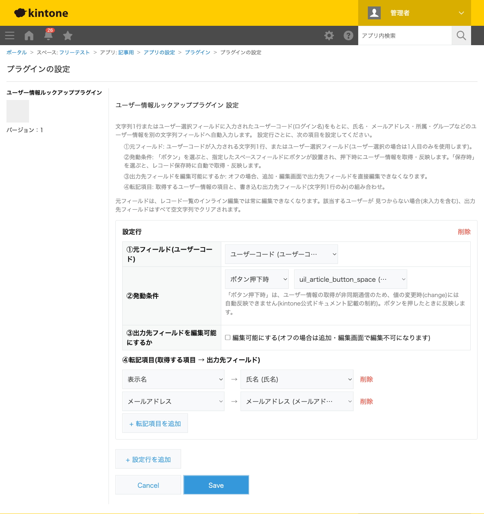
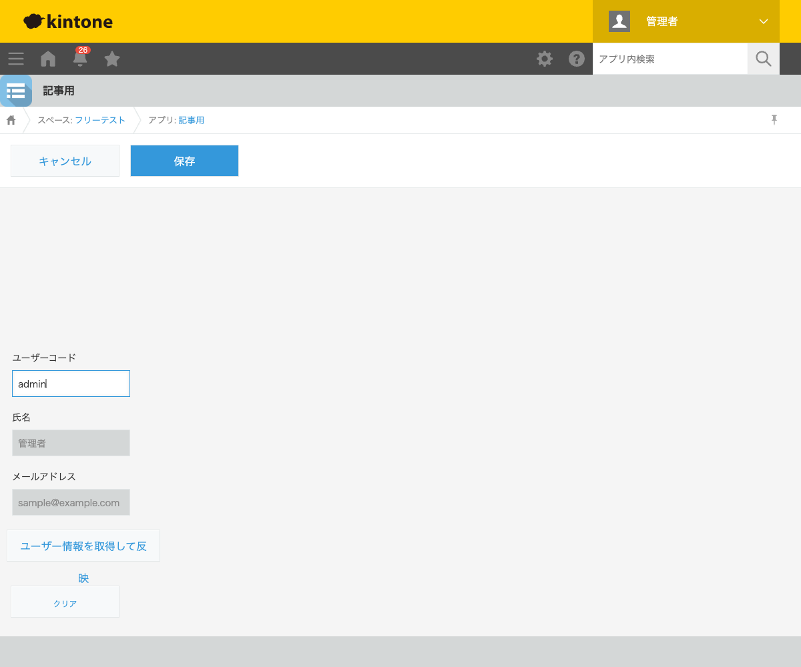

GovAppsプラグイン 安全性を確認できる無料kintoneプラグイン集
担当者の氏名やメールアドレスを毎回手入力していると、社員名簿を確認する手間や入力ミスが 発生しがちです。この記事では、ユーザーコードを入力するだけで氏名・メールアドレス等を 自動入力する方法を、実際にUser APIから取得した結果つきで解説します。
kintone標準の「ユーザー選択」フィールドで担当者を選ぶことはできますが、氏名以外の
メールアドレスや所属部署などの詳細情報を別のフィールドへ自動転記する機能はありません。
ユーザー情報を取得するにはUser API(/v1/users.json等)の呼び出しが必要で、
標準機能だけでは実現できません。
| 方法 | 向いている場合 | 注意点 |
|---|---|---|
| JavaScriptを自作する | 社内に開発者がいて、細かい制御をしたい場合 | User API呼び出し・該当ユーザーなしの場合の処理などを自前で実装・保守する必要がある |
| 有料の他社プラグイン | 予算があり、サポートを重視する場合 | 月額課金が発生する。ソースコードが非公開で処理内容を確認しにくい |
| GovAppsプラグイン(このプラグイン) | 無料で、氏名・メール・所属・グループの取得を試したい場合 | 出力先フィールドは文字列1行のみ対応 |
ユーザー情報ルックアッププラグインは無料・広告なしで、 ソースコードをGitHubで全公開 しています。User APIの呼び出しはログイン中のセッションで完結し、外部サーバーへの通信は 一切ありません。
ユーザー情報ルックアッププラグインは、元フィールド・ 発動条件・転記項目を設定するだけで使えます。

ユーザーコードを入力し、「ユーザー情報を取得して反映」ボタンを押すと、 User APIへ実際にリクエストが送られ、氏名・メールアドレスが自動的に入力されます。

「クリア」ボタンを押すと、元フィールド・転記先フィールドがすべて空になります。